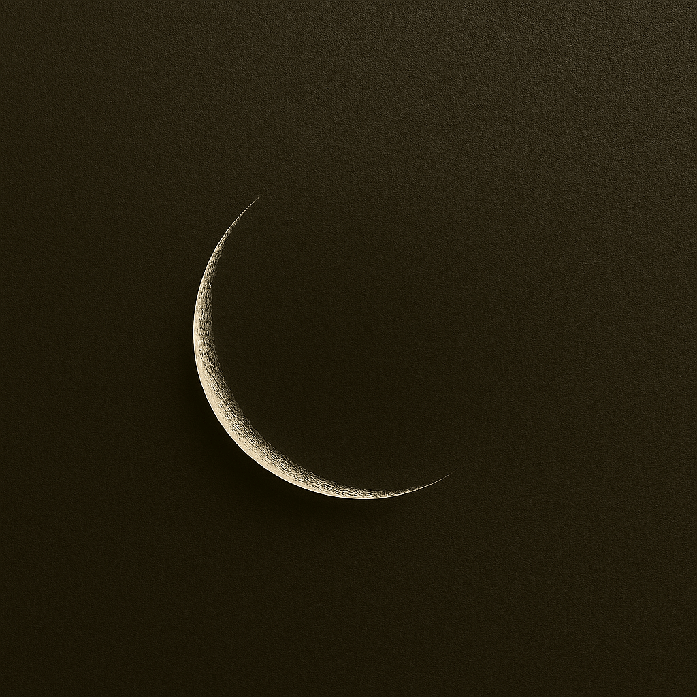

Many people think the High Holy Days are a Jewish thing, but the truth is they are God's. As it is written, ADONAI said to Moshe, “Tell the people of Isra’el: ‘The designated times of ADONAI which you are to proclaim as holy convocations are my designated times. Leviticus 23:1-2
And again, “And the foreigners who join themselves to ADONAI to serve him, to love the name of ADONAI,
and to be his workers, all who keep Shabbat and do not profane it, and hold fast to my covenant, I will bring them to my holy mountain and make them joyful in my house of prayer; their burnt offerings and sacrifices
will be accepted on my altar; for my house will be called a house of prayer for all peoples.” Isaiah 56:6-7

📜 Leviticus 23: God's Calendar of Holy Days (Karaite View)
Leviticus 23 is like God's calendar for special days. It lists the appointed times—days when the people of Israel are supposed to rest, gather, and remember God's goodness. Karaites believe these instructions come straight from the Torah and should be followed exactly as written, without adding traditions from the Talmud or other rabbinic sources.
🕊️ Weekly Sabbath
The 7th day of the week is a Sabbath—a day of complete rest. It is not one out of every seven days. It is the seventh day of the week. It begins at sunset the 6th day Friday night until sunset the 7th day, Saturday night.
No work, no distractions. It is a to focus on God, fellowship, rejoice and rest. Rest does not mean sleeping all day.
🍞 Spring Festivals
Passover (Pesach): On the 14th day of the first month, remember how God freed Israel from Egypt.
Feast of Unleavened Bread: Unleavened Bread (Chag HaMatzot) Starts the next day and lasts 7 days. Eat nothing with yeast— unleavened bread is eaten everyday to remember the escape from Egypt.
Firstfruits: After the first Sabbath during Unleavened Bread, offer the first sheaf of your harvest to God. Karaites count this day carefully to start the next feast. The day after the 1st Sabbath is a Sunday.
🌾 Feast of Weeks (Shavuot)
Count 50 days from Firstfruits. According to the text we are to count 7 Shabbats then the day after the 7th Shabbat is Shavuot. Then celebrate Shavuot.
It’s a harvest festival and a time to give thanks.
Karaites count these days based on the actual barley harvest and the lunar calendar—not fixed dates.
📯 Fall Festivals
Feast of Shoutings (AKA Trumpets) (Yom Teruah): A day of loud blasts and reflection. It’s the first day of the 7th month.
Day of Atonements (Yom HaKippurim): On the 10th day of the 7th month, fast and humble yourself before God. The day is typically called The Day of Atonement or the Fast.
Feast of Booths (Sukkot): Starts on the 15th day. Live in tents or huts for 7 days to remember the time in the wilderness. This is a 7 day celebration.
Eighth Day (Shemini Atzeret): A final day of rest and gathering after Sukkot.
🌿 Karaite Focus: Because we follow the Torah’s instructions to set our dates, we can’t predict the exact timing of each feast far in advance. Karaites rely on the natural signs God gave us—the moon’s cycle and the harvest in the land of Israel—to determine when each appointed time begins. Instead of using fixed calendars, we read the Torah directly and watch the heavens and the fields, just as our ancestors did.
Sukkot, the Feast of Booths, is more than a harvest celebration—it’s a divine rehearsal of shelter, joy, and prophetic hope. For Messianic Karaites, it’s a time to dwell in simple booths, remember YHVH’s protection in the wilderness, and anticipate the Messianic Age when all nations will worship in unity (Zechariah 14).
Scripture gives Sukkot many names—Feast of Ingathering, Season of Our Joy, Feast of Restoration—and each reveals a layer of meaning. In Ezra 3, the exiles rebuild worship through offerings. In Nehemiah 8, they rediscover the command to dwell in booths and respond with great gladness, using local branches to honor the Torah as best they could.
Yeshua was born on the first day of Sukkot. Clues from John 1 (“the Word tabernacled among us”), Luke’s priestly timeline, and the shepherds’ presence in the fields all point to a fall birth. His circumcision on Shemini Atzeret—the eighth day—would align with covenant and completion. Why would the God of Creation want the entire world gathered for this special season?
Galatians 4:4–5 removes all doubt about the Messiah not being born at an Appointed Time of God:
“But when the appointed time arrived, God sent forth His Son—born from a woman, born into a culture under the Torah—so that He might redeem those under the Torah and enable us to be made God’s sons.” (CJB)
“But when the set time had fully come, God sent his Son, born of a woman, born under the law, to redeem those under the law, that we might receive adoption to sonship.” (NIV)
Sukkot reminds us that YHVH doesn’t just visit—He dwells. In cloud, in booth, in flesh. And through Messiah, we’re invited into sonship, joy, and restoration.
May your Feast be filled with joy and blessing! Sukkot begins at sunset October 7, 2025!
The Day of Atonements and Nearness
Yom haKippurim, often translated as the Day of Atonements, is the holiest day in the biblical calendar—a day not merely of forgiveness, but of divine intimacy and communal restoration. The day is typically know as Yom Kippur or Day of Atonement. Leviticus 16 outlines its sacred choreography: the High Priest enters the Holy of Holies, bearing incense and blood, to atone for the sanctuary, the priesthood, and the people. It is very important to note that the people includes those of Israel and those who are not but have gathered for this holy day. “For on this day shall atonement be made for you to cleanse you; from all your sins before the Lord you shall be clean” (Leviticus 16:30).
This cleansing is transformational. The Hebrew root k-p-r suggests covering, reconciliation, and even ransom. It’s the day when the High Priest is allowed to enter the Most Holy Place as the community stands collectively before the Divine, stripped of pretense, clothed in humility.
Leviticus 23:27 calls it “a Sabbath of solemn rest,” a day to “afflict your souls.” To afflict your soul can easily be written to afflict your appetite. Both biblical and Rabbinic sources agree that this is a fast, The Fast to be more exact. Isaiah 58 reframes fasting as a call to justice: “Is not this the fast that I choose: to loose the bonds of wickedness… to let the oppressed go free?” (Isaiah 58:6). Yom haKippurim becomes a portal not just for personal repentance, but for societal healing.
The scapegoat (Leviticus 16:10) dramatizes the removal of communal sin, sent into the wilderness—a motif of exile and return, of bearing burdens and releasing them. The Cohen Hagadol pressed his hands on the head of the goat. He then confessed the sins of the people over the goat then another people would the release the goat in the wilderness. It echoes Psalm 103:12: “As far as the east is from the west, so far has He removed our transgressions from us.”
Ultimately, Yom haKippurim is not about perfection—it recognizes our sin but not to condemn to free us. It’s the one day the High Priest enters the innermost chamber, and the people draw near through contrition, prayer, and hope. It’s a rehearsal for renewal, a sacred reset, and a reminder that mercy is not earned—it’s offered.